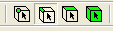

Purpose of this laboratory is to practice a generation of block-structured mesh and perform a simulation of steady turbulent fluid flow over NACA0012 profile at angle of attack set to \(1.55^{\circ}\) and freestream Mach number 0.7.
Open Workbench 19 (Start Menu/Programy/ANSYS 19…). Drag and drop the Geometry component system into the Project Schematic. Open the Geometry cell. Create a NACA0012 airfoil using the text ASCII file naca0012-3d-curve.txt: Open Design Modeler. Specify m as unit of length. Select Concept/3d-Curve. Provide a link to above file under Coordinates File. Click on Generate button.
Mirror the airfoil curve in the zx-plane (Create/Body Operation/Mirror, select zx-plane).
Make a surface. Select Concept/Surfaces from Edges (select the airfoil, use Ctrl button to select multiple elements).
We are going to generate a fluid areas surrounding the airfoil. Add new Sketch in the XY-Plane. Go to the Sketching mode. First, a half of the cylinder will be made in front of the airfoil (fig 1). Make a circle with origin at point (0,1 0,0 0,0). Set a circle diameter to 15m. Use Dimensions to specify the above parameters. Make a straight vertical line with length larger than the circle diameter. Place the vertical line at distance 0,1 from y-axis (use Parallel option to make the line parallel to y-axis). Use Modify/Trim option to remove the right half of the cylinder and the line segments above the circle.
Fig. 1 Half of the cylinder (Sketching mode)
Make a surface using the prepared sketch. Go to Modeling mode, select Concept/Surfaces from sketches. Change Add Material to Add frozen under Operation (new fluid element will be made).
Add new Sketch in the XY-Plane. Go to the Sketching mode. Make a rectangular 0,9 x 7,5m. The end points of the bottom side of rectangular are : (0,1 0), (1 0). Use Coincident in order to attach some lines with the other. Fig. 2 shows the rectangular in the sketching mode.
Fig. 2 Rectangular placed next to half of the cylinder
Add new Sketch in the XY-Plane. Make a rectangular 6 x 7,5m. The end points of the bottom side of rectangular are : (1 0), (7 0). Use Coincident option to connect some lines together.
Make the two surfaces. Switch to Modeling mode (Concept/Surfaces from sketches), select both rectangles, Change Add Material to Add frozen under Operation.
Subtract the airfoil surface from fluid areas surrounding the body (half of circle and rectangle). Create/Boolean/Subtract. Preserve Tool Bodies set to No. See fig. 3
Fig. 3 Airfoil body subtracted from half of cylinder and rectangular
Mirror the two rectangles (one with subtracted airfoil) in the zx-plane. (Create/Body Operation/Mirror, select zx-plane)
Connect the five faces together to ensure that there are linked together (Tools/Joint). See fig. 4
Fig. 4 The five faces surrounding the airfoil
Make the fluid volume (surface). This will be done by making a one part from 5 surfaces listed under Parts. First, deactivate the Line Body, right click and select Suppress (This body will not be used for meshing). Select the remaining five bodies (use Ctrl or Shift buttons to select multiple bodies), right click and select Form New Part.
Provide the names indicating the airfoil surface (wall) and boundary in the freestreem (pressure far field). Select the line selection in the top menu , select the curves corresponding to the airfoil, right click, select Named Selection and put the curves under Geometry. Specify the name ‘wall_airfoil’ under Named Selection. Click Generate to apply. In a similar way select the curves at the boundaries of the computational domain, provide the name ‘pressure_far_field’. Save the project (Drive D, folder Student, make your own folder there, if needed). Close Design Modeler (green project part).
Add the Mesh button (drag and drop) in the Project Schematic (Workbench) and link it to the present Geometry.
Click on the Mesh button. Change the settings under the Physics reference from Mechanical to CFD, use Fluent as Solver Preference. Generate a preliminary (unstructured) mesh (see fig. 5). The mesh is very coarse near to the surface and it cannot be used for viscous flow simulations.
Fig. 5 Preliminary mesh generated over airfoil using the global mesh settings
Specify about ~100 of nodes on edges perpendicular to surface, with bias factor ~4000. The mesh has to be refined near to the wall. First, select line option in the top menu, next select the edge(s) from the screen, click on Mesh, right click, select Sizing. Specify the element size under Type/Element Size or change to Number of Divisions under Type and specify the number of elements.
Keep the same number of elements on edges corresponding to opposite sides of virtual rectangular. Otherwise, the mapped scheme cannot be applied for making the bloc-structured mesh.
The boundary layer mesh (Inflation) cannot be used now.
Right click on the Mesh, select Face Meshing. Add all faces under Geometry. Select Quadrilaterals under Method. Click on Generate button. Fig. 6 shows the view of the computational mesh.
Save the meshing project. Export the mesh to *.msh Fluent file. File/Export.
Fig. 6 Final block-structured mesh
Read the mesh file. Check the scale. Keep the length in m. Rotate the mesh by 1.55 deg. Mesh/Rotate/ set -1.55 deg.
Set-up the computations in Fluent. The inlet Mach (M) number is \(0.7\), the Reynolds number based on chord length of the airfoil and inlet velocity is \(1.5 \cdot 10^{6}\) . Change the fluid viscosity to specify the proper Reynolds number.
Select appropriate turbulence model (Spalart-Allmaras or SST k-omega) and specify the boundary conditions on pressure far field boundary. The numerical results will be compared with experiment performed at conditions \(p_{0} = 101325 Pa\) , \(T_{0}=311 K\). The static pressure and static temperature has to be specified in the boundary condition tab.
Set the operating pressure to \(0 Pa\) Define/Boundary Conditions/Operating Condition.
Set the static pressure to \(73048 Pa\) (Define/Boundary Conditions/pressure far field). \[ \frac{p_{0}}{p} = \left[ 1 +\left(\frac{\gamma - 1}{2}\right) M^{2}\right]^{\frac{\gamma}{\gamma - 1}} \]
Set the static temperature to \(283 K\). For air \(\gamma=1.4\). \[ \frac{T_{0}}{T} = 1 +\left(\frac{\gamma - 1}{2}\right) M^{2} \]
Turbulence quantities. Ratio of turbulent to molecular viscosity \(\nu = 10\), Turbulent intensity \(TI = 1\%\).
Run the computations. The residuals should fall down below \(10^{-5}\). The numerical scheme should be set to the second order upwind.
Verify the pressure, temperature and velocity fields. Verify the lift and drag coefficients cd=Fd/(0.5 u2 A) \[c_{d} = \frac{F_{D}}{0.5 \rho u^{2} A} \] , (A is equal to 1) and compare them with literature data (activate the freestream conditions in Report/Reference values). For this flow the measured lift and drag coefficient are equal to \(c_{l}=0.241\), \(c_{d}=0.0079\). Note that the forces have to be computed with respect to direction of the incoming flow. This is why the mesh has been rotated in the beginning by 1.55 deg. It means that the lift and drag coefficients can now easily be obtained in Report/Forces/Direction vector by setting 1 and 0 factors under Direction vector. x=1 y=0 for drag, x=0, y=1 for lift.
Compare the measured and computed pressure coefficient profiles. Display/Plots/XY Plot. The experimental profiles are stored in files: test-data-top.xy and test-data-bottom.xy (Load File under File Data)